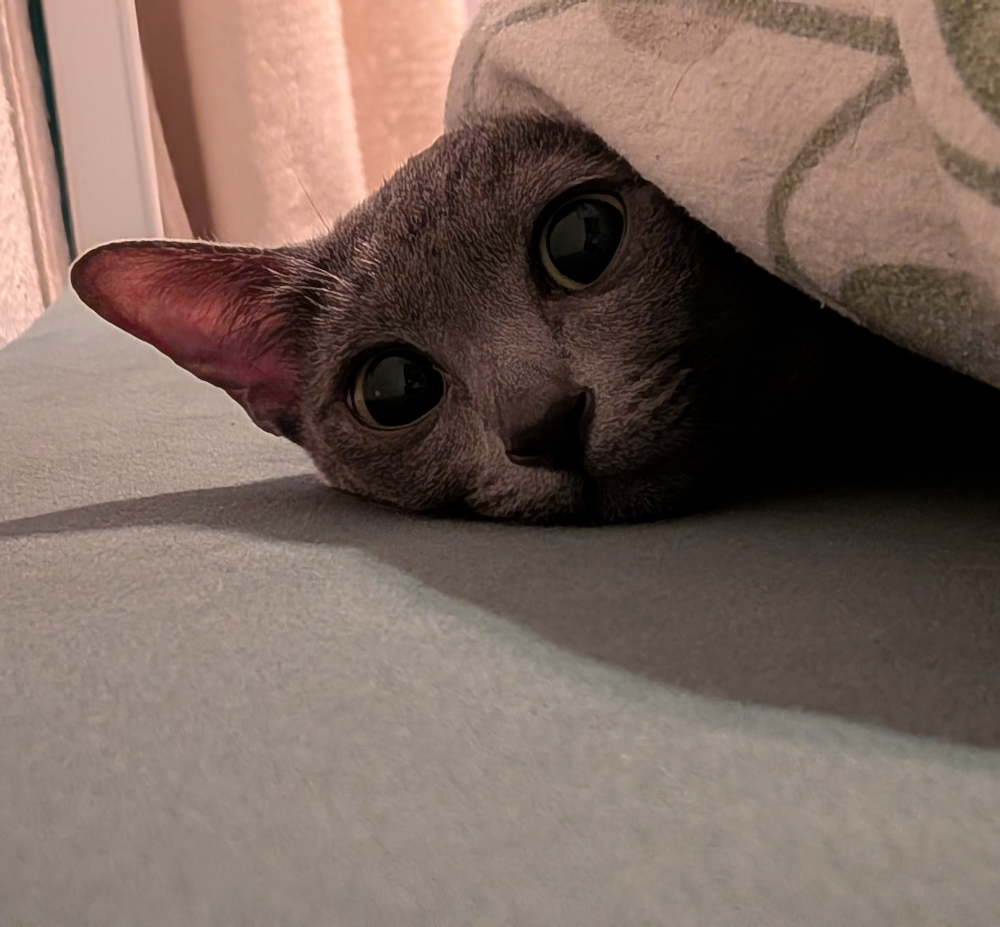

Ich bin eine Katze und ein Jahr alt. Ich spiele am liebsten mit meinem Bruder Fangen, klettere gern an Vorhängen hoch und mein Lieblingsessen sind trockene Pellets mit undefinierbarem Inhalt, die penetrant nach Zoofachhandlung riechen.
Leitsätze
Was wollen wir eigentlich?
Hier erfahrt ihr irgendwann etwas dazu, wie wir uns das Leben gemeinsam vorstellen. Bis dahin zeigen wir euch erstmal, wer wir eigentlich sind:
Die Bewohner
